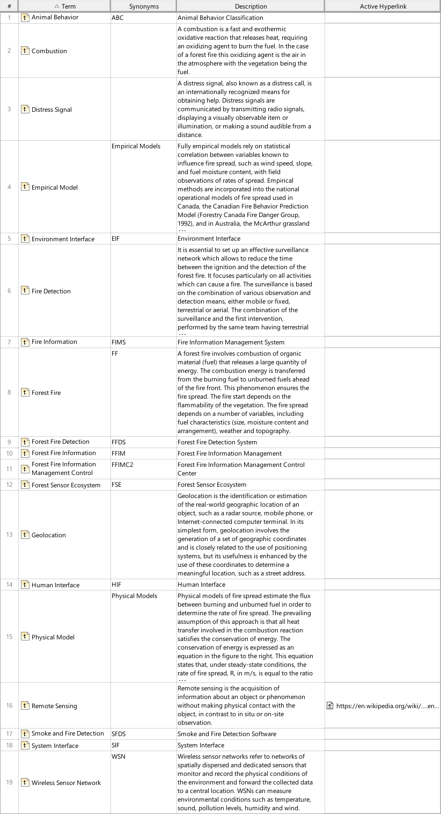
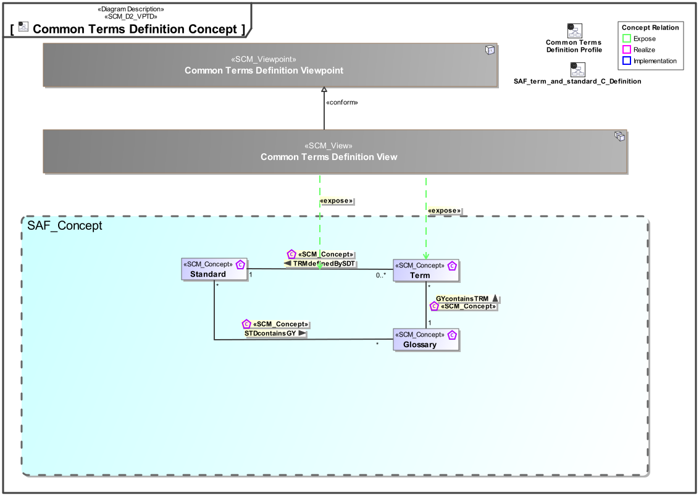
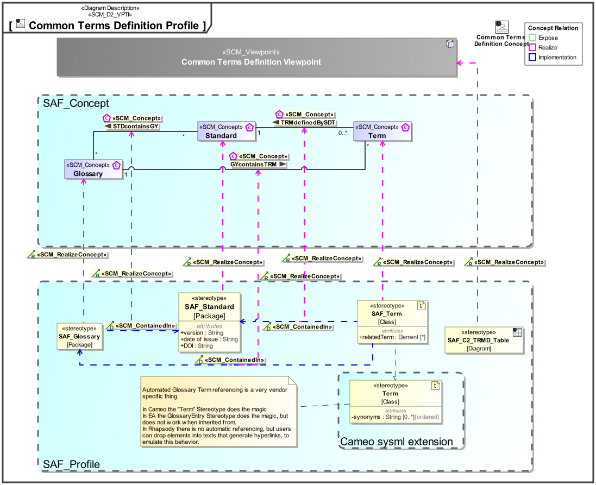

C2_TRMD Common Terms Definition Viewpoint
| Domain | Aspect | Maturity |
|---|---|---|
| Common | Taxonomy & Structure |


The Common Terms Definition Viewpoint supports the definition of applicable terms used in standards or defined during the systems engineering activities.
The Common Terms Definition Viewpoint supports the definition of glossaries and terms during the technical processes and according to the information management process of the INCOSE SYSTEMS ENGINEERING HANDBOOK 2023 .
A table format listing terms included in glossaries, or standards if applicable.
A table format listing abbreviations included in glossaries, orstandards if applicable.
The following Stereotypes / Model Elements are used in the Viewpoint:
The Diagram shows the concepts exposed by the viewpoint, and related concepts if necessary.

| Concept | Documentation |
|---|---|
| Term | Specifies the fact that a term is usually defined by a standard, but can also be defined as part of system development work. |
| TRMdefinedBySDT | Specifies the fact that a term is defined by a standard. |
The Diagram shows the implementation of exposed concepts.

| Concept | Realization |
|---|---|
| Term | SAF_Term |
| TRMdefinedBySDT |